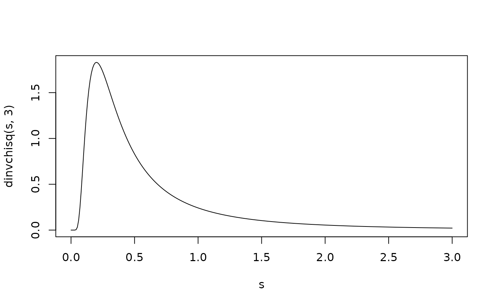

Density, distribution function, quantile function and random generation for the inverse chi-squared distribution.
Usage
dinvchisq(x, df, ncp = 0, log = FALSE)
pinvchisq(q, df, ncp = 0, lower.tail = TRUE, log.p = FALSE)
qinvchisq(p, df, ncp = 0, lower.tail = TRUE, log.p = FALSE)
rinvchisq(n, df, ncp = 0)Arguments
- x, q
vector of quantiles.
- df
degrees of freedom (non-negative, but can be non-integer).
- ncp
non-centrality parameter (non-negative).
- log, log.p
logical; if
TRUE, probabilities p are given as log(p).- lower.tail
logical; if
TRUE(default), probabilities are \(P[X \leq x]\); ifFALSE\(P[X > x]\).- p
vector of probabilities.
- n
number of observations. If length(n) > 1, the length is taken to be the number required.
Details
The functions (d/p/q/r)invchisq() simply wrap those of the standard
(d/p/q/r)chisq() R implementation, so look at, say, stats::dchisq() for
details.
See also
stats::dchisq(); these functions just wrap the (d/p/q/r)chisq()
functions.
Examples
s <- seq(0, 3, .01)
plot(s, dinvchisq(s, 3), type = 'l')

f <- function(x) dinvchisq(x, 3)
q <- 2
integrate(f, 0, q)
#> 0.9188914 with absolute error < 9.4e-07
(p <- pinvchisq(q, 3))
#> [1] 0.9188914
qinvchisq(p, 3) # = q
#> [1] 2
mean(rinvchisq(1e5, 3) <= q)
#> [1] 0.91924
f <- function(x) dinvchisq(x, 3, ncp = 2)
q <- 1.5
integrate(f, 0, q)
#> 0.950349 with absolute error < 3.8e-06
(p <- pinvchisq(q, 3, ncp = 2))
#> [1] 0.950349
qinvchisq(p, 3, ncp = 2) # = q
#> [1] 1.5
mean(rinvchisq(1e7, 3, ncp = 2) <= q)
#> [1] 0.9502991